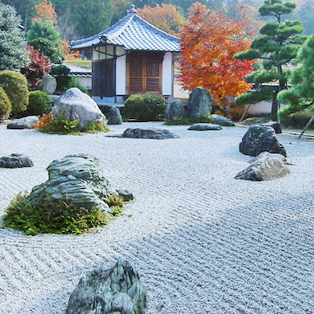

В садовом искусстве под стилем подразумевается совокупность традиций, канонов, приёмов и принципов, обеспечивающих единство образной системы сада, его обобщенное идейно-художественное содержание. Стилистика сада в Японии формировалась под влиянием окружающей природы. Своеобразный растительный мир, острова, обрамленные великими водами, короткие полноводные реки, озера различного происхождения, красивейшие горы. Географические особенности страны позволяют даже несколько метров площади превратить в полноценный сад – японский сад камней, объединяющий в себе естественность, минимализм и символизм...

Культура дзен породила сад, который мог вообще обходиться без растений или иметь их в минимальном количестве. Своеобразный микромир, в котором песок, галька, камни и мхи создавали прообраз Вселенной, предназначался для медитации, глубокого погружения в раздумья, созерцания и самопознания. Загадочный и непостижимый для западного человека сад камней стал для Японии такой же визитной карточкой, как сакура и хризантема. В садово-парковой культуре других стран аналогов ему нет.
Своеобразный микромир, в котором песок, галька, камни и мхи создавали прообраз Вселенной, предназначался для медитации, глубокого погружения в раздумья, созерцания и самопознания. Загадочный и непостижимый для западного человека сад камней стал для Японии такой же визитной карточкой, как сакура и хризантема.
История Японии сохранила имя мастера дзен-буддизма, создавшего первый сад камней в Японии. Сад в киотском буддийском храме Рёандзи построил мастер Соами (1480-1525). На площадке в 10х30 метров находятся 15 камней, расположенных в пяти группах. Традиция предписывает смотреть на камни с определенного места. Если ей последовать, таинственная и необъяснимая гармония сада окажет на вас гипнотическое воздействие.
Автор статьи: Николай Гулькин